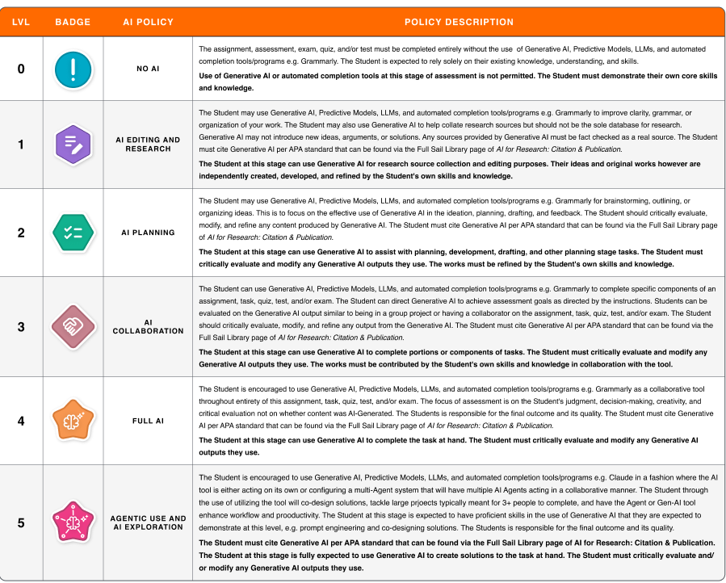

C++ Introductory Textbook (Current Project)
A C++ textbook designed for both introductory programming courses as well as a beginner's guide outside of college. The goal of the text book is to provide foundational level support and learning through multiple concepts of programming and C++. This book focuses on topics translatable to other languages but does also touch on memory management, OOP concepts, and File I/O.
Personal Contribution: My personal contribution to this book is that I am the main author of this book.
AI Levels for Higher Education

This was done through an internal taskforce at Full Sail University. The goal was to come up with an easy to understand but robust system that allows for both students and faculty to understand what is appropriate level of Generative AI implementation on an assignment and classroom level. The levels were based off of existing sources of the AI Assessment Scale by Mike Perkins, Jasper Roe, Leon Furze and Jason MacVaugh but were adjusted to fit Full Sail's unique educational style and goals.
Personal Contribution: I personally researched, outlined, and developed the specific wording and levels required. I also implemented feedback based on student and staff responses to previous iterations.
AI Assessment Scale Link: AI Assessment Scale